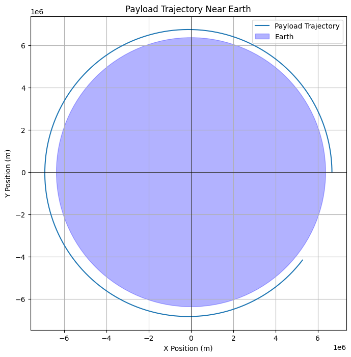

Problem 3
Imagine throwing a ball upwards. What happens depends on how fast you throw it:
-
Too slow: It goes up and comes right back down in an elliptical path (a curve like a stretched circle). This is like a satellite in orbit – it's constantly falling but also moving forward, so it keeps going around.
-
Just right (escape velocity): If you throw it with exactly the right speed, it will go up, and its speed will slowly decrease until it almost stops infinitely far away. This path is a parabola (a U-shaped curve that never closes). It's the edge case where the object barely escapes Earth's pull.
-
Too fast: If you throw it even faster than the "just right" speed, it will fly away from Earth and still have some speed left even when it's very far away. This path is a hyperbola (a wider U-shaped curve).
What determines the path?
The main thing is the speed of the payload when it's released.
- Slow speed: Leads to an elliptical orbit (it stays around Earth).
- Medium speed (escape velocity): Leads to a parabolic path (it barely escapes).
- High speed: Leads to a hyperbolic path (it definitely escapes).
The direction of the release also matters for the shape of the ellipse or hyperbola, but the type of path (elliptical, parabolic, or hyperbolic) is mainly decided by the speed compared to the escape velocity at that location. Escape velocity is like the "break free" speed from Earth's gravity at a certain distance.
So, the possible paths are:
- Elliptical: For payloads that don't have enough speed to escape Earth.
- Parabolic: For payloads released at the exact speed needed to just barely escape Earth's gravity.
- Hyperbolic: For payloads released with more than enough speed to escape Earth's gravity.
Perform a numerical analysis to compute the path of a payload released near Earth
import numpy as np
import matplotlib.pyplot as plt
G = 6.67430e-11
M_earth = 5.972e24
R_earth = 6.371e6
initial_altitude = 300e3
initial_position = np.array([R_earth + initial_altitude, 0.0])
initial_velocity = np.array([0.0, 7800.0])
time_step = 10.0
total_time = 5000.0
num_steps = int(total_time / time_step)
trajectory = np.zeros((num_steps + 1, 2))
velocity_history = np.zeros((num_steps + 1, 2))
time_points = np.linspace(0, total_time, num_steps + 1)
trajectory[0] = initial_position
velocity_history[0] = initial_velocity
def calculate_acceleration(position):
r = np.linalg.norm(position)
if r == 0:
return np.array([0.0, 0.0])
acceleration = -G * M_earth / (r**3) * position
return acceleration
for i in range(num_steps):
current_position = trajectory[i]
current_velocity = velocity_history[i]
acceleration = calculate_acceleration(current_position)
next_velocity = current_velocity + acceleration * time_step
velocity_history[i + 1] = next_velocity
next_position = current_position + next_velocity * time_step
trajectory[i + 1] = next_position
plt.figure(figsize=(8, 8))
plt.plot(trajectory[:, 0], trajectory[:, 1], label='Payload Trajectory')
earth_circle = plt.Circle((0, 0), R_earth, color='blue', alpha=0.3, label='Earth')
plt.gca().add_patch(earth_circle)
plt.xlabel('X Position (m)')
plt.ylabel('Y Position (m)')
plt.title('Payload Trajectory Near Earth')
plt.axhline(0, color='black', linewidth=0.5)
plt.axvline(0, color='black', linewidth=0.5)
plt.grid(True)
plt.legend()
plt.axis('equal')
plt.show()

Explanation:
- Constants and Initial Conditions:
We define Earth's gravitational constant, mass, and radius. We then set initial values for the payload's altitude, position (in a 2D plane for simplicity), and velocity. You can change these initial conditions to explore different trajectories.
- Simulation Parameters:
We set the time step for the numerical integration and the total simulation time. The number of steps is calculated accordingly.
- Data Storage:
We create NumPy arrays to store the payload's position (trajectory) and velocity at each time step.
-
calculate_acceleration(position)Function: This function takes the current position of the payload and calculates the gravitational acceleration vector acting on it due to Earth. -
Numerical Integration Loop:
- In each step, we get the current position and velocity.
- We calculate the acceleration at the current position.
- We update the velocity using the Euler method: \(\mathbf{v}_{i+1} = \mathbf{v}_i + \mathbf{a}_i \Delta t\).
- We update the position using the Euler method: \(\mathbf{r}_{i+1} = \mathbf{r}_i + \mathbf{v}_{i+1} \Delta t\).
- The new velocity and position are stored in the respective arrays.
- Visualization:
- We plot the y-position against the x-position to visualize the trajectory.
- We add a circle representing Earth for reference.
- We label the axes, add a title, and include a grid.
plt.axis('equal')ensures that the scaling of the x and y axes is the same, so Earth appears circular.plt.show()displays the plot.
How to Use and Explore:
- Change
initial_altitudeandinitial_velocity: Experiment with different starting altitudes and speeds. For example:- Try a lower initial velocity (e.g., 7000 m/s) to see an elliptical decay.
- Try a velocity closer to the escape velocity at that altitude (approximately \(\sqrt{2 \times G \times M_{earth} / (R_{earth} + initial\_altitude)}\)) to see a more open trajectory.
- Try a velocity significantly higher than escape velocity to see a hyperbolic trajectory.
- Change the direction of the initial velocity (e.g., give it an x-component).
- Adjust
time_stepandtotal_time: A smallertime_stepwill generally give more accurate results but will take longer to compute. Increasetotal_timeto see the trajectory over a longer period. - Observe the Shape:
Note whether the trajectory forms a closed ellipse, a parabola-like shape that doesn't close, or a hyperbola-like shape that curves away.
Limitations of the Euler Method:
The Euler method is a simple first-order numerical method. It can introduce significant errors, especially for longer simulations or larger time steps. For more accurate results, more sophisticated numerical methods like the Runge-Kutta methods (e.g., RK4) would be preferred. However, for a basic visualization of the trajectory types, the Euler method can be sufficient.